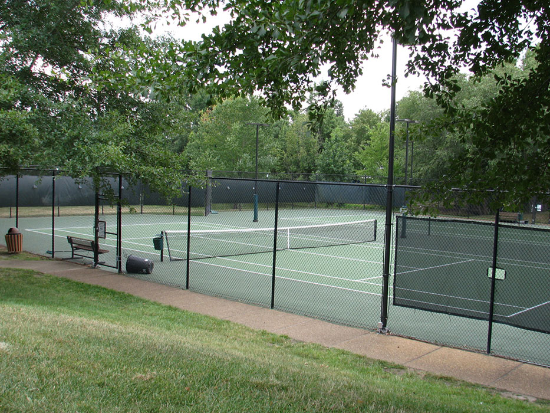

<div class="homebody">
    <div class="content">
        <div class="hometitle">
            <span>Welcome to the Wellesley Tennis Reservations</span>
        </div>
        <div class="row">
            <div class= "tenniscourtimg col-sm-5">
                
            </div>
            <div class="col-sm-6">
                How to Use the Website:
                <ol>
                <li>Click on either Register or Login.</li>
                <li>Once registered, log in.</li>
                <li>Once logged in, go to the Reservations Page.</li>
                <li>Select the correct date in the drop down menu.</li>
                <li>Find the slots you would like to register. YOU CAN ONLY REGISTER FOR THREE 30 MINUTE SLOTS PER DAY.</li>
                <li>You are done!</li>
                </ol>
                <br/>
                Rules:
                <ol>
                <li>Residents must use the Court Reservation system that is in place.</li>
                <li>Only Wellesley Residents may use the Court Reservation System that is in place.</li>
                <li>Only Wellesley residents may reserve court time.</li>
                <li>Residents may sign up for up to 1.5 hours of court time per day.</li>
                <li>Guests must be accompanied by a Wellesley resident on the court.</li>
                <li>At least one Wellesley resident per court is required where guests are playing.</li>
                <li>Only non-skid shoes are allowed on courts. </li>
                <li>Courts are for tennis play only.</li>
                <li>No pets are permitted on the courts.</li>
                <li>No food is permitted on the courts.</li>
                <li>No skateboards, bicycles, rollerblades, or other non-tennis equipment are permitted on the courts.</li>
                <li>Juniors (under 8 years old) must be accompanied by an adult.</li>
                </ol>
            </div>
        </div>
    </div>
</div>


